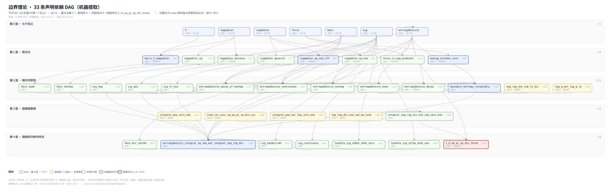

这一页真正要回答的不是「有多少条定理」，而是「哪些陈述带机器检验的证明、哪些不带」。 数量是营销数字；「已证与未证之间的那条线」才是科学的东西。所以本页围绕那条线组织——并在结尾公开披露数量本身的分歧，而不是把它藏起来。
两套 Lean 4 语料承载着证明。它们是范围不同的两个体，不可互换。
| 语料 | 它证明了什么 |
|---|---|
| 范畴层（CausModel） | 干预范畴及其普适性质；内聚作为幂等单子；边界作为其不动点；缺陷作为可判定的障碍类。该层零 、零 。 |
| 值层（冻结） | 33 条冻结声明——7 个定义之上的 27 条定理与 6 条引理——形式化 logistic 坐标实例：两项势、精确导数恒等式、符号三分、以及 – 形式的两个极限。 |
| 桥 | 把范畴层的「形式被迫」定理与其非范畴性负结果，搬到值层的中心对象上。 |
| 项 | 为什么做不到 |
|---|---|
| 变量识别（ 刚度，及其同伴） | 它是关于世界的一条假设。再多形式化也去不掉它。映射假设 |
| 解读的剩余物 | 把守恒荷读作自我连续性，是解读，并已如此标注。解读 |
| 数值表 | 它们是确定性计算，不是机器证明。跑数不等于证明定理。计算 |
机器检验的精确性，与经验确认，是两项不同的成就。本工作只握有第一项，并且这么说了。
cd lean && bash build_lean_all.sh
完整复算需要 Lean 4.33.0 与对应版本的 Mathlib。脚本逐模块编译，然后编译单一可导入入口，再跑零- 检查。另有两个辅助脚本校验冻结清单与声明计数。
A 模块 BoundaryTheory 的机器提取依赖图：7 个定义、33 条承重声明（40 节点 / 72 边 / 5 层），从边界势到 C_H=π²/3。
60 秒读法：定义 → 势/力簇与熵/积分簇 → C_H。两簇几乎不共享中间结果，图暴露出这一结构接缝。注：B 线接缝与 no-go 不在本图。

本纲领自己的文档，对同一批语料报出了四套不同的数字。直接测量两套语料（2026-10-09）得到第五套。与其挑一个好看的，不如全部列出。
| 语料 | 出处 | 所报 |
|---|---|---|
| 范畴层 | 论文 | 124 条声明 · 12 个模块 · 冷构建 3333 jobs |
| 本线自己的审计件 | 155 条声明 · 14 个模块 · 3335 jobs | |
| 直接测量（2026-10-09） | 107 定理 / 49 定义 / 15 文件 | |
| 边界势纲领开发体 | 本线自己的总结件 | 417 定理 · 77 定义 · 53 文件 |
| 直接测量（2026-10-09） | 434 定理 / 84 定义 / 55 文件 | |
| 值层 | 论文与总结件一致 | 33 条声明——唯一各方一致的数 |
| 主张 | 状态 |
|---|---|
| 两套语料均零 、零 编译通过 | 机器检验 |
| 33 条冻结值层声明 | 机器检验 |
| 桥定理 | 机器检验 |
| 任何声明计数 | 有争议——已公布四套 |
| 关于任何真实系统的任何陈述 | 一个都没有 |